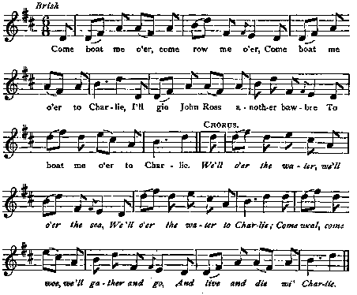
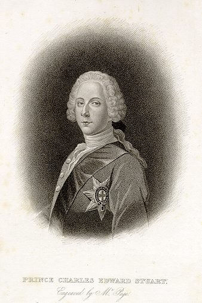

O'er the Water tae Charlie!
Passeur, conduis-moi chez Charlie!
Three songs to the same tune:
A Gathering song and an Incitement to Revenge from "The True Loyalist" (1779)
And an original song from the "Scots Musical Museum" Volume II and Hogg's "Relics", volume II
Tune - Mélodie
Variante
"The Potstick"
from Hogg's "Jacobite Relics" 2nd Series N°38 page 76
Sequenced by Ch.Souchon

|
To the tune:
The tune is older [than the Jacobite era] and has had many names: 'The Pot Stick', ' The Irish Pot Stick', 'Shanbuie', 'Over the water' and 'Over the Water to Charlie'... Kate Van Winkler Keller (1992) identifies “Charlie” as having been based on a 1740’s dance tune called “Potstick.” However, by the 1750's it appears in published collections with the "Over the Water" title...: - in Oswald’s "Caledonian Pocket Companion" (book 4, pg. 7, c. 1752), - the "Gillespie Manuscript" of Perth (1768), - Jonathan Fentum’s "Complete Tutor for the German Flute" (London, 1766), - Robert Bremner's 1757 "Collection" (pg. 16), - and in Aird's "Airs", 1782, vol.1, N°68 (as "Marquis of Granby-Shambuy)". Source "The Fiddler's Companion" (cf. Liens). |
A propos de la mélodie:
"La mélodie est antérieure [à l'ère Jacobite] et a porté toutes sortes de titres: "Le bâton à touiller", "Le bâton irlandais", "Shanbuie", "En passant la rivière" et "Passeur, chez Charlie!".... Kate Van Winkler Keller (1992) reconnaît dans "Charlie" un air à danser datant de 1740 appelé le "bâton à touiller". Pourtant, c'est bien sous le titre "Over the Water" qu'il apparaît dans les premières publications des années 1750: - le "Caledonian Pocket Companion" d'Oswald (livre 4, page 7, vers 1752), - le manuscrit "Gillespie" de Perth (1768), - le "Complete Tutor for the German Flute" de Jonathan Fentum (Londres, 1766), - la "Collection" de Robert Bremner' 1757 (pg. 16). -et dans les "Airs" d'Aird, 1782, vol. 1, N°68 (titre:"Marquis de Granby-Shambuy")... Source "The Fiddler's Companion" (cf. Liens). |
|
To the texts
There are three songs to the same tune with the same "aquatic" chorus. The allusion to Prince Charlie is clear in all of them. Since the tune was published many years before his appearance in Scotland, the popular lyrics of the "Potstick" must have been changed to meet the propaganda needs of the time. The present song N°3 stands out as containing in its 4th stanza what is perhaps " the most perfect verse in the whole Jacobite poetry , [as the] ardent sincerity of loyal self-sacrifice was never worded so well." (so writes Andrew Lang, 1844 - 1922, in his 1911 contribution to "The Scottish Historical Review", an essay on the Jacobite Songs of "The True Loyalist"). This song exists, - as a 3-verse version in the Scots Musical Museum, vol. II, Song 187, page 195, 1788 - as well as in Hogg’s Jacobite Relics, vol. II, N°38, page 76, 1821, with a 4th stanza added by him. An MS. of song N°3 is in the British Museum. This is a version which, according to Stenhouse (1853), was revised and corrected by Burns . The "True Loyalist" , printed in 1779, has the 2 others whith the same chorus , but neither of them may be regarded as a model for the 3rd. In his note to the song published in 1821 in the "Relics", volume II, James Hogg describes the song as "a well known popular song and tune, expressing the feelings of the Jacobite ladies of these days" and quotes Ray, the Volunteer's Journal: "I found always the ladies most violent - they would listen to no matter of reason." Hogg adds "I do not know if the last two stanzas have ever before been printed, though they have often been sung." He apparently did not borrow the first three stanzas straight from the "Museum", or he should have known that the penultimate verse also appears there. On the other hand, he does not explain the origin of the last stanza. In his and W.E. Henley's "Poetry of Robert Burns", vol. III, p. 328, T.F. Henderson wrote in 1898: Hogg's set is merely Ayrshire Bard (Burns) plus Ettrick Shepherd (Hogg) , thus inferring that Hogg wrote the beautiful fourth stanza. Andrew Lang does not completely agree with this view and writes: - "The chorus and stanza I in both Hogg's and the "Museum's" versions seem to me popular and traditional; - the third must be by Burns; - the fourth, if not Hogg's, is popular and traditional. I myself thinks that Hogg dealt fairly with the collected , whether songs in the 'Relics', or ballads for Scott's 'Minstrelsy'. His letters to Scott with ballads (June 30, 1802, September 10, 1805), are candid and explicit: he tells the Sheriff how he collected, what he got 'in plain prose' mixed with broken stanzas, and how he harmonised them. He is equally candid in what he says of The Lament of Flora McDonald ." Before Burns and Hogg, Alexander McDonald had already used both tune and burden of this song for his Gaelic "Incitement for the Gaels" |
A propos des textes
Il existe trois chants sur le même timbre avec le même refrain "aquatique". Bien que l'allusion au Prince Charles soit partout transparente, la mélodie avait été publiée longtemps avant que celui-ci ne débarque en Ecosse. On peut donc y voir une chanson populaire, "Potstick", modifiée pour répondre aux besoins de la propagande de l'époque. Le chant N°3 se distingue par sa 4ème strophe où s'exprime, comme jamais auparavant peut-être, " de la façon la plus parfaite dans toute la poésie Jacobite , l'ardente sincérité d'un peuple loyal prêt à se sacrifier". (Andrew Lang, 1844 - 1922, dans son essai critique sur les chants Jacobites du "Vrai Loyaliste" publié dans le "Scottish Historical Review" de 1911). Ce chant se trouve - en trois strophes dans le Scots Musical Museum, volume II, chant N°187, page 195, 1788 - et, augmenté d'une 4ème strophe, dans les "Reliques Jacobites" de Hogg, vol. II, N°38, page 76, 1821. Un manuscrit du chant N°3 est au British Museum. Il s'agit d'une version qui selon Stenhouse (1853) a été revue et corrigée par Burns . Le "Vrai Loyaliste" , datant de 1779, recèle les deux autres chants dotés du même refrain, dont aucun n'a servi de modèle au 3ème. A propos de ce chant, publié en 1821 dans ses "Reliques", volume II, James Hogg décrit ce chant comme l' expression des sentiments des femmes Jacobites de l'époque et cite le Journal du volontaire Ray: "C'est chez les dames qu'on trouve le plus de violence - elles refusent d'entendre la voix de la raison." Hogg ajoute "Je ne sais pas si les deux dernières strophes ont déjà été publiées, mais on les entend souvent chanter". Il ne semble donc pas avoir emprunté les 3 premières directement au "Musée", sinon il aurait su que l'avant-dernière s'y trouvait également. En outre, il ne dit rien de la fameuse 4ème strophe. Dans la "Poésie de Burns", vol. III, p. 328, qu'il édita avec W.E.Henley, T.F. Henderson notait en 1898: La version de Hogg est signée barde de l'Ayshire (Burns) + Berger d'Ettrick (Hogg), suggérant ainsi que c'est Hogg qui composa la sublime 4ème strophe. Andrew Lang n'est pas entièrement de cet avis, lui qui écrit: - "Le refrain et le 1er couplet de Hogg et du "Musée" me semblent être authentiquement populaires. - le 3ème couplet doit être de Burns. - le 4ème couplet est, sinon de Hogg, authentiquement populaire. Je crois, pour ma part, que Hogg a traité honnêtement les matériaux collectés , tant les chants des "Reliques" que les ballades pour la "Minstrelsy" de Scott. Dans ses lettres d'envoi à celui-ci (30 juin 1802 et 10 septembre 1805), il explique sans détour sa façon de procéder: il notait les textes en simple prose avec des éléments de couplets rimés, puis harmonisait le tout. Il fait preuve de la même franchise à propos de Flora McDonald ." Avant Burns, Alexander McDonald avait déjà utilisé la mélodie et les paroles du refrain de ce chant d'origine pour son chant gaélique "Appel aux Gaëls" |
1° A Gathering Song from "The True Loyalist"
1° Chant de Rassemblement tiré du "Vrai Loyaliste"

|
A SONG
From the "True Loyalist", page 58, 1779 1. The K[in]g he has been long from home, The P[rin]ce he has sent over, To kick th' Usurper off the th[ro]ne, And send him to Hannover. O'er the water, o'er the sea, O'er the water to C[har]lie, Go the world as it will, We'll hazard our lives for C[har]lie. 2. On Thursday last there was a fast, Where they preach'd up rebellion, The masons on the walls did work, To place around their cannon. O'er the water, &c. 3. The W[hi]gs in cursed cabals meet, Against the Lord's Anointed; Their hellish projects he'll defeat, And they'll be disappointed. O'er the water, &c. 4. Sedition and rebellion reigns O'er all the B[ri]tish nation; Why should we thus like cyphers stand, And nothing do but gaze on? O'er the water, &c. 5. Brave Britons rouse to arms, for shame, And save your K[in]g and nation; For certainly we are to blame, If we lose this occasion. O'er the water, &c. 6. The P[rin]ce set out for Edinburgh town To meet with C[o]pe's great army, In fifteen minutes he cut them down, And gain'd the victory fairly. O'er the water, &c. |
CHANT
Tiré du "Vrai Loyaliste", page 58, 1779 1. Le roi resté dans l'exil si longtemps Nous a dépêché le Prince Pour chasser du trône le charlatan Vers sa germaine province. Par-delà les eaux, par-delà la mer Nous voulons aller vers Charles. Le monde peut bien tourner de travers. Nous risquons nos vies pour Charles. 2. Jeudi dernier, jour de jeûne, on prônait La rébellion dans les prêches Et les maçons dans les murs pratiquaient Pour les artilleurs des brèches. Par-delà les eaux... 3. Les Whigs ont beau, contre l'Oint du Seigneur, Ourdir leurs traîtres cabales Les diaboliques plans qui sont les leurs Il faudra qu'ils les ravalent. Par-delà les eaux... 4. La sédition aura gagné bientôt Toute la Grande-Bretagne. Moi, les deux pieds dans le même sabot, Faudrait-il que je regarde? Par-delà les eaux... 5. Aux armes, Britannique, tu le dois Au Roi, comme à la Patrie. Cette occasion qui ne reviendra pas, La manquer! Quelle infamie! Par-delà les eaux... 6. Voilà que le Prince part pour Edimbourg Affronter Cope et je ne doute Que quinze minutes lui suffiront pour Le contraindre à la déroute. Par-delà les eaux... (Trad. Ch.Souchon (c) 2011 |
2° Incitement to Revenge from "The True Loyalist"
2° Appel à la revanche tiré du "Vrai Loyaliste"
|
OVER THE WATER TO C[HAR]LIE
From the "True Loyalist", page 82, 1779 1. When C[har]lie came to Edinburgh town, And a' his friends about him, How pleas'd was I for to go down, I cou'd not be merry without him. But since that o'er the seas he's gone, The other side landed fairly, I'd freely quit wi' a' that I have, To get over the water to C[har]lie. 2. There's nothing heard of in this town, But talking of 'heading and hanging; If you speak the truth they threaten to kill, If not with that they'll hang you, But GOD, who sits in heavens high, Their injur'd oaths hears early, He quickly sends his vengeance down, And punishes them severely. 3. No doubt you have heard from C[ar]lisle, (*) Of such a damnable jury, But God is just, and will not let pass, But will punish them with fury, He'll send them headlong down to Hell, Which will happen right early, Because they hadn't compassion, when judg'd The friends of the royal P[rin]ce C[har]lie. 4. O! hard fate! has been thy lot, But God he will protect thee, So as he has done heretofore, He never will neglect thee. And send thee o'er the seas again, Wi' thousands landed fairly, And then true Scotsmen will rejoice, When once they've gallant C[har]lie. (*) see Towly's Ghost , Note 3. |
PAR-DELA LES EAUX VERS CHARLIE
Tiré du "Vrai Loyaliste", page 82, 1779 1. Quand Edimbourg a vu Charles venir Entouré de ses fidèles Je pris à l'acclamer un grand plaisir. La vie redevenait belle. Mais il a dû repasser l'océan, Aborder à l'autre rive. Charlie, je veux tout sacrifier céans, Par-delà les eaux, te suivre. 2. En ville il n'est plus question que de hart De billot et de vengeance Parle franc: l'on te menace de mort. Si tu te tais: la potence. Mais là-haut dans le ciel il est un Dieu. Il écoute leurs injures. Sa punition fondra bientôt sur eux Et n'en sera que plus dure. 3. A Carlisle (*), le jury s'est montré On ne peut plus condamnable. Dieu juste, Tu ne peux laisser passer Ces actes abominables. En enfer Tu vas les précipiter, Tous, la tête la première. Récompensant l'absence de pitié, Avec laquelle ils jugèrent. 4. Charles, le sort ne te ménagea point. Tu sais pourtant que Dieu t'aime. Il t'a jusqu'ici prodigué ses soins. Demain il fera de même. Il va te faire repasser la mer Avec d'innombrables troupes. A la santé de leur Prince si cher Les Scots videront leurs coupes! (*) Cf. Le fantôme de Townley , Note 3. (Trad. Ch.Souchon (c) 2011) |
3° An Original Song in the "Museum" (1788) and the "Relics" (1821)
3° Chant original tiré du "Musée" (1788) et des "Reliques" (1821)
|
1. Come boat me o'er, come row me o'er,
Come boat me o'er to Charlie; I'll gie John Ross anither bawbee To ferry me o'er to Charlie. [1] CHORUS: We'll o'er the water, we'll o'er the sea, We'll o'er the water to Charlie; Come weel, come woe, we'll gather and go And live or die wi Charlie. [2] 2. I lo'e weel (It's weel I lo'e) my Charlie's name, Though some there be abhor him: But O, to see Auld Nick gaun hame, And Charlie's faes before him! 3. I swear [and vow] by moon and stars (sae bright) , And sun that shines (glances) [so] early! If I had twenty thousand lives, I'd [die as aft] (gie them a') for Charlie.
4.
I ance had sons but now hae nane,
In italics: "Relics" version. "Auld Nick" (stanza 2) usually applies to the devil, but here to King George. |
 |
1. Viens, passeur, fais-moi traverser,
Et qu'on me conduise à Charlie; Un écu, John Ross, le dernier, Si tu me conduis à Charlie. [1] CHORUS: Au delà des eaux, de la mer, Nous irons rejoindre Charlie, Irons, malgré le sort amer, Vivre ou bien mourir pour Charlie. [2] 2. Charlie, je vénère ton nom Que tant ne savent que haïr: Et je veux voir Nick déguerpir, Tes ennemis dans ses fourgons, 3. M'est témoin l'astre de la nuit Ou celui qui brille à l'aurore Que si j'avais vingt vies encore, Vingt fois je mourrais pour Charlie.
4. J'avais des fils - ils ont péri-
|
|
[1] This song, as
the previous one
, highlights a geographical feature of the Scottish Highlands, that was a determining factor in the initial success of Prince Charles Edward's enterprise: their
numberless lochs and rivers
.
[2] A nursery rhyme conveys a similar message: Over the water and over the lea, And over the water to Charley. Charley loves good ale and wine, And Charley loves good brandy, And Charley loves a pretty girl, As sweet as sugar-candy. Rhyme collected by James Orchard Halliwell-Phillips (1820 - 1889) , Class I, N°15 in the 1842 edition of his "Nursery Rhymes of England". (In the English literature Charlie is often reproached with drunkenness). |
[1] Comme
le précédent
, ce chant montre que les caractéristiques géographiques des Highlands avec leurs
innombrables "lochs" et cours d'eau
sont pour beaucoup dans le succès initial de l'aventure de Charles Edouard.
[2] C'est ce que confirme une comptine : Par delà les eaux, la praire, Par delà les eaux, chez Charlie! Charles aime l'ale et le vin, Le cognac aussi, je crois bien. A lui la belle que voici, Douce comme sucre candi. Comptine recueillie par James Orchard Halliwell-Phillips (1820 - 1889), Catégorie I, N°15 de l'édition 1842 de ses "Comptines d'Angleterre". (Une certaine littérature anglaise fait de Charlie un ivrogne). |